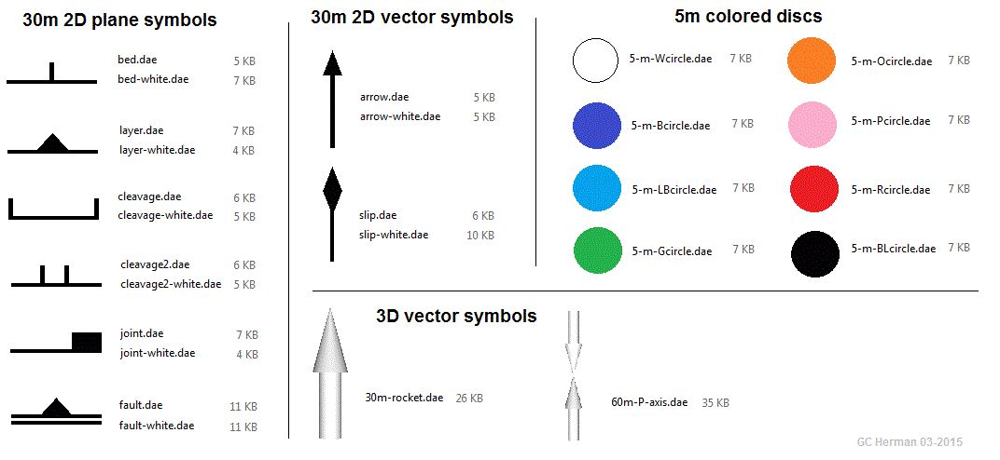

Excel to KML Geologic Symbols
Example InputConvert from an Excel spreadsheet to geological symbols and circles in KML format.

Cut & Paste from a MS Excel Worksheet using the variables listed below. Download the example input from the button above.
The symbol (*.dae) files that this tool uses can be resident within the directory that you load the resulting *.KML file into Google Earth from, or by using the prefix https://dl.dropboxusercontent.com/u/89445333/GEsymbols/ to each symbol. The latter is a Dropbox public folder that some organizations may block from accessing on line. The full set of symbols in a *.zip file with explanations and related topics are available at http://www.impacttectonics.org/gcherman/downloads/GEO310/GCH_GEsymbols/GCH_GE_Geology_Apps.htm. KML Name:
Anno Spacing:
Bed and layer dip line (~1.5 m):
Joint, arrow, slip-line (~ 8.0 m) or 5-m 3D circle:
| Station | Longitude | Latitude | Altitude | Azimuth | Dip/Plunge | Xscale | Yscale | Zscale | Symbol | Note | Orientation(2D/3D) |